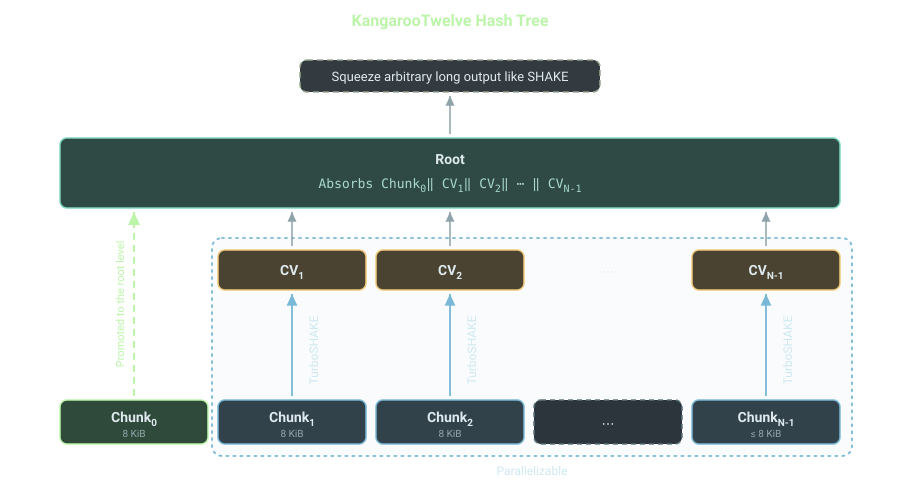
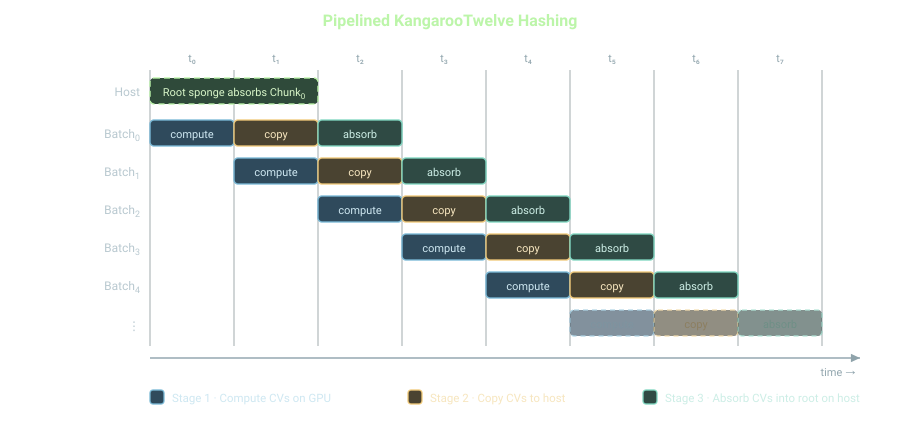

Special thanks to Dr. Gilles Van Assche for discussion.
In this article we discuss implementation techniques for high throughput hashing with KangarooTwelve family of extendable output functions (XOFs) on a graphics processing unit (GPU).
KangarooTwelve is a family of XOFs, specified in RFC 9861.
It offers two extendable output functions, named KT128 and KT256.
An extendable output function is a hash function which allows squeezing arbitrary long output instead of producing a fixed size digest.
It is more flexible.
SHA3-256 is a hash function because it produces a 256-bit (32-byte) digest.
SHAKE128 is a XOF because it can be squeezed for producing as much output is needed.
SHA3 family of hash functions and XOFs are specified in FIPS 202, published by NIST.
Most standardized hash functions, which are commonly used, say SHA1, SHA2 or SHA3, are not parallel by design.
They can not effectively make use of modern multi-core and multi-threaded compute systems.
CPUs provide one more parallelism axis - single instructions multiple data (SIMD) instructions.
Think SSE, AVX2 and AVX512 instructions on x86_64 CPU architecture.
And NEON and SVE instructions on arm64 CPU architecture.
Due to their design most hash functions do not get to exploit SIMD parallelism too.
Then there are GPUs, which are massively parallel.
Hashing a long message, say 1GiB, on a GPU, with SHA3 functions would result in massive under utilization of resources.
Most of the commonly used hash functions absorb the input message in sequentially ordered blocks of fixed size.
Meaning block(i+1) can not be touched until blocki has been processed, s.t., i >= 0.
This creates a data dependency chain among consecutive message blocks.
The way to solve it is using a hierarchical structure.
Input message to be hashed is split into chunks of fixed size.
Each chunk can be processed in parallel.
Meaning we can spawn N many threads to process a total of M many chunks, s.t., M >= N.
Processing each chunk produces a short digest, call it a chaining value (CV).
Those M many CVs are chained together by building a tree like structure above them.
The tree reduces M chunks into a single root CV, which can be squeezed for producing arbitrary long output stream.
The way to design a sound tree hashing mode is specified in paper named "Sufficient conditions for sound tree and sequential hashing modes".
Then came the paper "Sakura: a flexible coding for tree hashing", which specified how to format and domain separate message chunks and CVs correctly to avoid any clash between different tree building strategies such as choice of tree arity.
KangarooTwelve, our topic of discussion, builds on these foundations.
It is a parallel hash function designed for high throughput absorption of arbitrary long messages.
For processing message chunks it uses an internal hash function - TurboSHAKE128 for KT128 and TurboSHAKE256 for KT256.
TurboSHAKE is another XOF, which is SHAKE alike, with the striking difference of halved Keccak-p[1600] permutation rounds - just 12 rounds, instead of usual 24.
One can think of TurboSHAKE as faster SHAKE, which is exactly what the name suggests.
TurboSHAKE128 doubles its throughput compared to SHAKE128, without any loss of cryptographic security, harnessing the cryptanalytic advantage of Keccak permutation.
Couple of years ago I wrote a Rust library crate for TurboSHAKE.
KangarooTwelve also has couple of implementations available in different programming languages.
But none of them supports hashing on GPU, until the one I maintain added it.
I'm happy to announce that my Rust library crate kangarootwelve supports absorbing message on a NVIDIA GPU.
Starting from v0.1.3 of kangarootwelve crate one can offload hashing to NVIDIA GPUs.
It is feature-gated behind "cuda" feature.
For now GPU hashing support is limited to NVIDIA GPUs, because of having only CUDA backend.
In future I will make it portable using cross-platform programming interface like WebGPU.
For the rest of the article we will focus on implementation techniques for squeezing as much performance possible from a massively parallel compute platform like a GPU.
Let us begin with a short primer on KangarooTwelve. KangarooTwelve takes two inputs - a message M and a customization string C. Both of them can be of arbitrary length, including zero. It splits the concatenated and padded input into N many chunks, s.t., the last chunk can be partial. The padding rule ensures there will be at least one chunk. Chunk size is specified to be 8KiB. Last chunk can be smaller. KangarooTwelve builds a single level tree over the leaf chunks. Each leaf chunk is independently compressed into a fixed size chaining value using an instance of TurboSHAKE hasher. An exception is the first chunk. It gets promoted to the root level. Chaining values are fixed to 32 bytes for KT128 and 64 bytes for KT256. In the root level of the KangarooTwelve hash tree, we have the first chunk and (N-1) many CVs. Simply put, the root level TurboSHAKE hasher absorbs the concatenation of the first chunk and an ordered list of CVs. In reality there exists padding and length encoding requirements for sound hashing, as mandated in the Sakura coding paper. The root level TurboSHAKE sponge, once finalized, lets us squeeze arbitrary long output. The squeezing part of KangarooTwelve stays sequential - same as SHAKE. The absorption part of KangarooTwelve has massive parallelization opportunity. Obviously with caveats, encountered only after you implement and benchmark hashing throughput.

A first attempt in implementing KangarooTwelve would be as following.
Input: Message M and Customization string C
Steps:
- Concatenate and pad input, get S
- Split S into N many chunks
- Parallel-For chunk index i = 1 to (N-1)
- CV_i = TurboSHAKE(chunk_i)
- promote CV_i to root level
- root-sponge = TurboSHAKE(chunk_0 || CV_1 || ... || CV_(N-1))
- Allow squeezing from root-sponge
This will exploit the multi-threading parallelism model.
GPUs implement a multi-threading model which is different than CPUs.
We refer to it as single instruction multiple threads (SIMT).
A single instruction gets streamed into a group of threads, each executing that instruction on different piece of data.
It is obviously grossly simplified.
In reality the model leaves room for more flexibility.
For example, the same instruction does not strictly need to be executed by the group of threads in lock-step.
Different threads, part of the same group, can branch and execute different instructions.
The question we want to ask, "does this implementation technique let us utilize the hardware resource most efficiently?".
And the answer is NO.
The main problem with the previous implementation is, we wait for all dispatched threads to finish computing the CV for their assigned leaf chunk.
Note, KangarooTwelve builds a single level tree structure over leaves.
If it would have built a Merkle Tree-like structure, we could have exploited parallelism for each level of the tree.
Obviously with Merkle Tree the opportunity to parallelize diminishes as we gradually approach the root level.
The number of nodes per level gets reduced by t for a t-ary Merkle Tree.
Then there is an obvious data-dependency among the levels themselves.
For KT128, the root level TurboSHAKE128 sponge needs to absorb 8KiB, followed by (N-1) x 32-bytes of chaining values.
Assuming we are absorbing a 1GiB message, it splits into ~217 chunks.
Leaving the first one out, which gets directly promoted to the root level, there are (217-1) chunks to be compressed independently, using TurboSHAKE128.
It will produce ~222 bytes, i.e., 4MiB of ordered and concatenated CVs, need to be absorbed by the root level sponge.
Root level TurboSHAKE128 absorbs roughly 8KiB + 4MiB of message.
TurboSHAKE128 has a rate of 168 bytes, resulting in ~25015 Keccak-p[1600] permutation calls, after each block absorption.
And this is all sequential.
The only good part is, we are using TurboSHAKE, so just 12-rounds of Keccak-p[1600].
The worse part is to realize that GPU, which is a massively parallel computing platform, has to execute this root level TurboSHAKE128 sponge absorption in a single thread.
That is a great way to waste compute capability of a GPU.
Instead we can transfer the CVs to the host CPU.
Not an issue for systems featuring unified memory, accessible at high bandwidth by both CPU and GPU.
But it is more common to see PCIe or NVLink connecting host CPU with guest GPU.
That has lower bandwidth compared to GPU memory.
It negatively impacts the performance achievable by KT128.
To summarise, we have recognized three problems.
It would be unfair to not recognize another important problem. We would like to be able to hash a message residing on either CPU memory or GPU memory. In case the message is not already GPU memory-resident, it needs to be copied to GPU memory over the PCIe bottleneck. For sake of simplification, we will assume the data to be hashed by KangarooTwelve is ready, sitting right on GPU memory. That way we can focus on engineering an efficient parallel hashing technique and not on input preparation and availability.
We can reduce the impact of the data-dependency problem, i.e., KangarooTwelve root level sponge is waiting for leaves to finish computing their CVs, by introducing "pipeline stages".
To understand it better we recall how a CPU works.
A CPU has pipeline stages through which instructions flow.
In a simplified model, there are three stages - fetch, decode and execute.
Say instructioni gets fetched, at that moment in time other two stages are idle.
As soon as instructioni gets decoded, instruction(i+1) gets fetched.
At this moment in time, execution stage is still sitting idle.
As instructioni gets executed, and instruction(i+1) gets decoded, instruction(i+2) gets fetched.
After instructioni retires, i.e., execution unit finishes its execution, instruction(i+1) and instruction(i+2) reach execution and decoding stage, respectively.
At the same time the fetcher is working on instruction(i+3).
We stop chasing instructions now.
Pipeline staging opens up a degree of parallelism even for a sequential process like executing an ordered set of instructions.
The goal is to keep these pipeline stages always busy, without blocking.
In context of processing instructions, it is often referred to as instruction level parallelism (ILP).
We will introduce pipeline stages for hashing with KangarooTwelve.
KangarooTwelve hashing pipeline need to have three stages - compute CV, transfer CV to host CPU memory and absorb CV into root sponge.
A single GPU thread computes chaining value for a single leaf chunk.
Following the SIMT model of GPU, we will dispatch N many threads for computing N many CVs.
We call it a "batch" with size of N.
The whole message to be hashed is split into M many batches, s.t., roughly (N x M) many chunks.
We will pass M batches through these three stages of the pipeline.
Practically speaking, the last batch may not have N number of active threads and the last active thread of the last batch may process a smaller chunk, i.e., < 8KiB.
When batchi, i.e., 0 <= i < M, finishes its computation of N many CVs, it is pushed to second stage, where it copies those N x 32 bytes (for KT128) or N x 64 bytes (for KT256) to host CPU.
At that time batch(i+1) starts computing leaf CVs.
As copying CVs for batchi finishes, those CVs are ready to be absorbed into the root level TurboSHAKE sponge - last stage of the pipeline.
Here I'm assuming the root level sponge has already absorbed the first leaf chunk, which gets directly promoted to the root level.
That itself can run concurrently after the first batch was enqueued for execution on GPU.
As soon as batchi retires, i.e., its chaining values has been absorbed into the root sponge, batch(i+1) can arrive in final stage.
Batch(i+2), if already finished computing its chaining values, can start copying them over to host CPU memory, as part of the second stage.
At that same moment in time, batch(i+3) can start on first stage of the pipeline.
We won't chase batches through these pipeline stages anymore.
One important observation, the final root sponge state always lives on host CPU memory.
The leaf chunk CVs to be absorbed comes to it.
After all the batches has retired from the pipeline stages, the root sponge can be finalized following TurboSHAKE specification.
Now it can be used for squeezing arbitrary long output right on the host CPU, where the consumer supposedly lives.

I will end the article with a note the achieved performance.
We benchmark the KT128 implementation of Rust crate kangarootwelve on a NVIDIA RTX PRO 6000 Blackwell Server Edition GPU.
It is a data center-grade GPU, featuring compute capability (CC) 12.0.
It is available for rent on AWS EC2 instance g7e.2xlarge.
KT128 achieves a message absorption throughput of ~215GiB/s on this GPU, saturating for messages of size >=16GiB.
This measurement does not include the time to transfer input message to GPU.
For really long messages, that itself can take a while, eating out of the total throughput.
If the use case is hashing GPU resident data, the existing model works just fine.
If the data is instead on disk or in host CPU memory, it needs to be transferred.
But a naive memcpy would not suffice.
Rather we can batch transfer them.
Instead of having three stages in the hashing pipeline, there will be four stages.
The first one will become transferring a batch of N leaf chunks to guest GPU memory.
Rest of them - compute CVs for the batch of leaf chunks, transfer CVs to host CPU memory and absorb CVs into root sponge.
As long as any one stage does not become a bottleneck, the pipeline should not be clogged.
It lets a merely sequential set of stages - transfer the input message to the guest GPU memory, hash it in parallel using KangarooTwelve and transfer the root sponge state back to host CPU memory, to instead exploit parallelism.
The kangarootwelve library crate allows you to hash both GPU memory-resident data and CPU memory-resident data.
The technique I described in the previous paragraph on interleaving "transfer of leaf chunks to GPU memory" with "leaf chunk compression on GPU", is not yet implemented.
The naive CUDA host to device memcpy is in-place for the time being.
Even though it is a Rust library, the CUDA backend is implemented in C++, with a Rust wrapper.
See the README in the git repository for how to use the underlying CUDA C++ API for hashing.